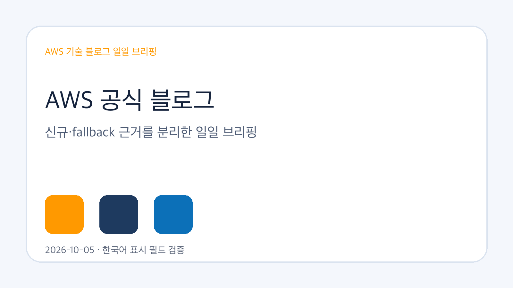
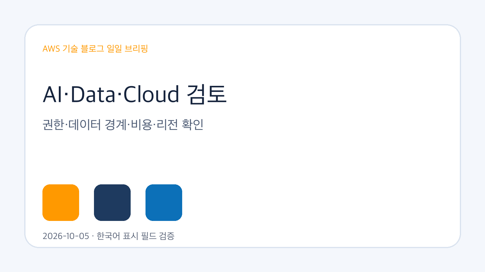
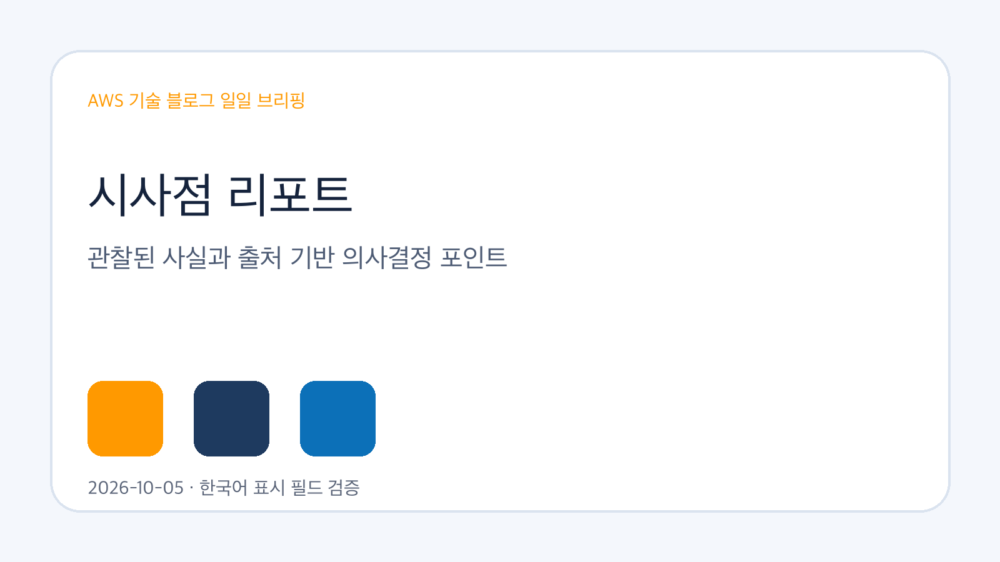

Amazon Bedrock AgentCore 기반 클라우드 마이그레이션 자동화 확장
Amazon Bedrock AgentCore 기반 다중 에이전트 프레임워크로 클라우드 마이그레이션의 발견, IaC 생성, 포트폴리오 거버넌스를 자동화하는 사례입니다.
원문 보기공식 RSS 3개에서 후보 50건을 확인했고, 신규 저장 0건을 기준으로 기업 AI·Data·Cloud 의사결정 관점의 근거 중심 시사점을 정리했습니다.
신규 게시물이 확인되지 않아 최근 검증된 AWS source-summary를 fallback 근거로 사용했습니다. 아래 항목은 새 글로 표시하지 않습니다.
Amazon Bedrock AgentCore 기반 다중 에이전트 프레임워크로 클라우드 마이그레이션의 발견, IaC 생성, 포트폴리오 거버넌스를 자동화하는 사례입니다.
원문 보기Amazon SageMaker AI에서 multi-turn reinforcement learning으로 검색 에이전트를 미세조정해 검색 품질과 신뢰성을 개선하는 접근입니다.
원문 보기Amazon Bedrock AgentCore Gateway, AWS IAM Identity Center, Amazon Cognito를 사용해 Claude Desktop에 인증 기반 Web Search를 연결하는 구성입니다.
원문 보기Amazon Quick 채팅 에이전트와 제한된 MCP 서버, 결정론적 규칙 엔진을 결합해 임대 계약 컴플라이언스 질의를 방어 가능하게 검증하는 패턴입니다.
원문 보기Uniopen이 리테일 검수 정책에 맞춰 Amazon Nova를 조정하고 운영 배포한 사례가 확인되었습니다.
원문 보기


확인된 자료에서는 AWS AI/ML, 데이터, 클라우드 서비스가 구체적인 구현 조건과 검토 포인트를 중심으로 업데이트되고 있습니다. 신규 글이 없는 경우에는 최근 검증된 source-summary만 보조 근거로 사용했으며, 신규 수집으로 단정하지 않았습니다.
기능 발표 자체보다 권한, 데이터 경계, 비용, 리전, 기존 시스템 연계와 같은 적용 조건을 함께 검토해야 한다는 점이 반복적으로 관찰됩니다.
| 기사 | 게시 | 카테고리 |
|---|---|---|
| Amazon Bedrock AgentCore 기반 클라우드 마이그레이션 자동화 확장 | 2026-10-02 | AI/ML |
| Amazon SageMaker AI에서 multi-turn RL로 검색 에이전트 미세조정 | 2026-10-03 | AI/ML |
| Amazon Bedrock AgentCore로 Claude Desktop에 보안 Web Search 연결 | 2026-10-03 | AI/ML |
| Amazon Quick로 임대 계약 컴플라이언스 질의를 검증하는 패턴 | 2026-10-03 | AI/ML |
| Uniopen의 Amazon Nova 기반 리테일 검수 정책 맞춤화 사례 | 2026-10-05 | AI/ML |
한국 기업은 AWS 서비스별 리전 제공 여부, 데이터 보관 위치, IAM·감사 로그 설계, 기존 운영 시스템과의 연계를 먼저 확인해야 합니다. 원문에서 확인되지 않는 내부 적용 효과는 확인 필요로 남겨야 합니다.
서비스 기능이나 고객 사례가 제시되어도 실제 적용 전에는 보안 권한, 데이터 분류, 비용 예측, 장애 대응, 감사 추적 가능성을 별도로 검증해야 합니다.
관찰된 사실: Amazon Bedrock AgentCore 기반 다중 에이전트 프레임워크로 클라우드 마이그레이션의 발견, IaC 생성, 포트폴리오 거버넌스를 자동화하는 사례입니다.
기업 의사결정 시사점/리스크/기회: 관찰된 사실은 Amazon Bedrock AgentCore 기반 클라우드 마이그레이션 자동화 확장 항목이 최근 AWS 공식 source-summary로 검증되어 있다는 점입니다. 의사결정자는 원문을 기준으로 적용 조건과 제약을 확인해야 합니다.
관찰된 사실: Amazon SageMaker AI에서 multi-turn reinforcement learning으로 검색 에이전트를 미세조정해 검색 품질과 신뢰성을 개선하는 접근입니다.
기업 의사결정 시사점/리스크/기회: 관찰된 사실은 Amazon SageMaker AI에서 multi-turn RL로 검색 에이전트 미세조정 항목이 최근 AWS 공식 source-summary로 검증되어 있다는 점입니다. 의사결정자는 원문을 기준으로 적용 조건과 제약을 확인해야 합니다.
관찰된 사실: Amazon Bedrock AgentCore Gateway, AWS IAM Identity Center, Amazon Cognito를 사용해 Claude Desktop에 인증 기반 Web Search를 연결하는 구성입니다.
기업 의사결정 시사점/리스크/기회: 관찰된 사실은 Amazon Bedrock AgentCore로 Claude Desktop에 보안 Web Search 연결 항목이 최근 AWS 공식 source-summary로 검증되어 있다는 점입니다. 의사결정자는 원문을 기준으로 적용 조건과 제약을 확인해야 합니다.
관찰된 사실: Amazon Quick 채팅 에이전트와 제한된 MCP 서버, 결정론적 규칙 엔진을 결합해 임대 계약 컴플라이언스 질의를 방어 가능하게 검증하는 패턴입니다.
기업 의사결정 시사점/리스크/기회: 관찰된 사실은 Amazon Quick로 임대 계약 컴플라이언스 질의를 검증하는 패턴 항목이 최근 AWS 공식 source-summary로 검증되어 있다는 점입니다. 의사결정자는 원문을 기준으로 적용 조건과 제약을 확인해야 합니다.
관찰된 사실: Uniopen이 리테일 검수 정책에 맞춰 Amazon Nova를 조정하고 운영 배포한 사례가 확인되었습니다.
기업 의사결정 시사점/리스크/기회: 관찰된 사실은 Uniopen의 Amazon Nova 기반 리테일 검수 정책 맞춤화 사례 항목이 최근 AWS 공식 source-summary로 검증되어 있다는 점입니다. 의사결정자는 원문을 기준으로 적용 조건과 제약을 확인해야 합니다.
원문과 추출 Markdown은 Obsidian raw, LLM Wiki collection, GBrain source 파일에 보존했습니다. 화면 표시 텍스트는 한국어 필드만 렌더링하도록 구성했습니다.